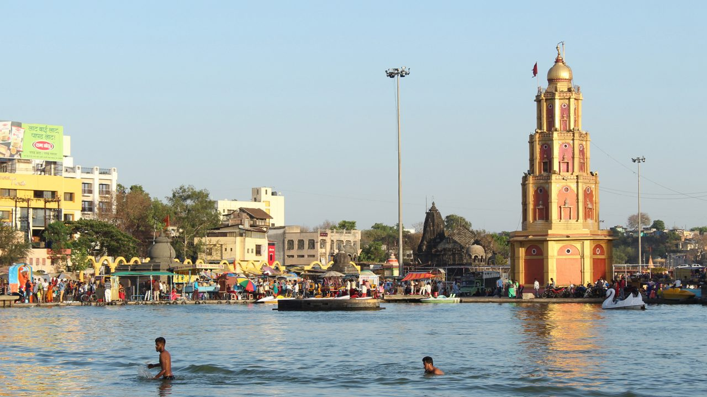
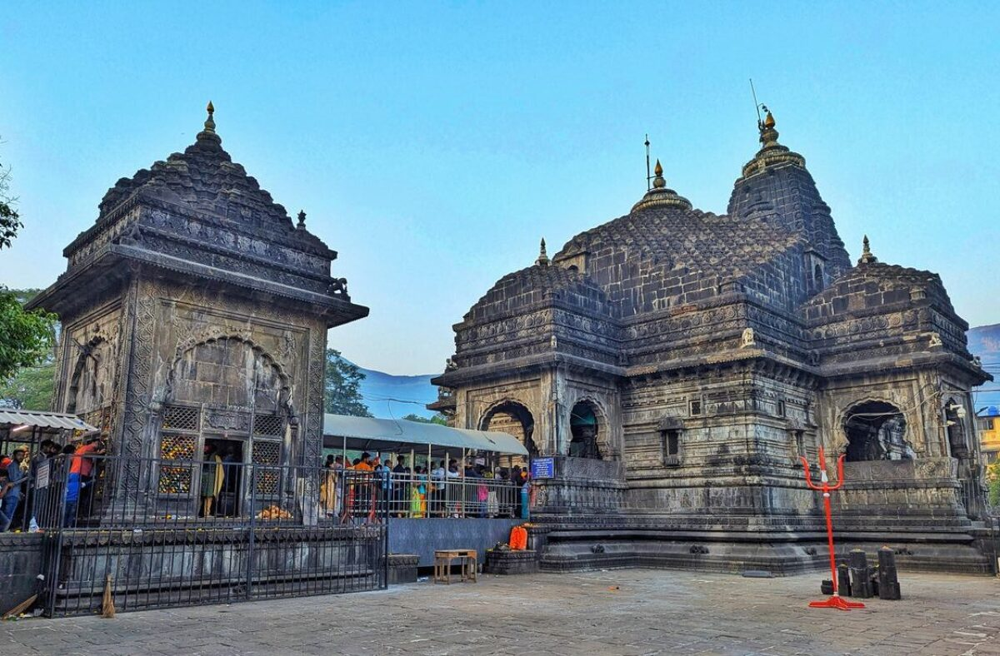

पवित्र गोदावरी तट व त्र्यंबकेश्वर ज्योतिर्लिंग सिंहस्थ कुंभमेळा २०२७
नाशिक आणि त्र्यंबकेश्वरच्या पावन भूमीवर अवतरणाऱ्या कोट्यवधी भाविकांच्या सेवेसाठी, सुरक्षिततेसाठी व सुखद तीर्थयात्रेसाठी महाराष्ट्र शासनाचे एकात्मिक डिजिटल महापोर्टल.
शासन व मार्गदर्शक नेतृत्व
सिंहस्थ कुंभमेळा २०२७ च्या यशस्वी, दिव्य व सुरक्षित आयोजनासाठी कटिबद्ध शासन
श्री नरेंद्र मोदी
श्री देवेंद्र फडणवीस
श्री एकनाथ शिंदे
श्रीमती सुनेत्रा अजित पवार
श्री गिरीश महाजन
डॉ. प्रवीण गेडाम, भा.प्र.से.
श्री शेखर सिंह, भा.प्र.से.
तीर्थयात्री त्वरित सेवा व सुविधा
सर्व प्रमुख शासकीय सेवा व सुविधा एका क्लिकवर उपलब्ध
नाशिक-त्र्यंबकेश्वर पावन तीर्थक्षेत्र दर्शन
गोदावरी नदीचे पवित्र रामकुंड व त्र्यंबकेश्वर ज्योतिर्लिंग कुशावर्त तीर्थ

पवित्र रामकुंड स्नान घाट व दीपमाळ
वैष्णव आखाड्यांचे मुख्य शाही स्नान तीर्थ व गोदावरी महाआरती परिसर

त्र्यंबकेश्वर ज्योतिर्लिंग व कुशावर्त कुंड
द्वादश ज्योतिर्लिंगांपैकी एक आणि शैव आखाड्यांचे पावन शाही स्नान कुंड
अधिकृत शाही स्नान पर्व व तारखा
अखिल भारतीय आखाडा परिषद, पुरोहित संघ आणि महाराष्ट्र शासन मान्यताप्राप्त पर्व तिथी.
शासकीय परिपत्रके व आदेश (Official Notices)
नाशिक जिल्हाधिकारी कार्यालय, पोलीस प्रशासन आणि आपत्ती व्यवस्थापन प्राधिकरणाची अधिकृत परिपत्रके
सुरक्षितता मार्गदर्शक: काय करावे आणि काय करू नये
आपली व आपल्या कुटुंबाची सुरक्षितता हीच सिंहस्थ कुंभमेळ्याची सर्वोच्च प्राथमिकता आहे.
काय करावे (Do's)
- • नेहमी प्रशासनाने निश्चित केलेल्या अधिकृत व सुरक्षारक्षक असलेल्या स्नान घाटांचाच वापर करा.
- • लहान मुले आणि ज्येष्ठांच्या खिशात नाव, संपर्क क्रमांक व पत्ता असलेली अधिकृत माहिती-पट्टी ठेवा.
- • आपत्कालीन परिस्थितीत शांत राहा आणि पोलीस व सुरक्षा कर्मचाऱ्यांच्या सूचनांचे पालन करा.
- • फक्त पॅकबंद किंवा महानगरपालिकेने तपासणी केलेल्या स्वच्छ पाणी केंद्रांमधील पाणी प्या.
काय करू नये (Don'ts)
- • गोदावरी पात्रातील धोकादायक अथवा बॅरिकेड्सने बंद केलेल्या खोल डोहात पोहण्याचा प्रयत्न करू नका.
- • गर्दीच्या ठिकाणी अफवा पसरवू नका; सोशल मीडियावरील असत्यापित संदेशांवर विश्वास ठेवू नका.
- • प्लॅस्टिकचा वापर टाळा; पवित्र गोदावरी नदीत कचरा किंवा निर्माल्य टाकू नका.
- • संशयास्पद अथवा बेवारस वस्तूंना हात लावू नका; तात्काळ पोलिसांना किंवा ११२ क्रमांकावर कळवा.
हरवलेली व्यक्ती / बालकांसाठी ४-टप्प्यांची एकात्मिक कार्यपद्धती
कुंभमेळ्यातील गर्दीत कोणी हरवल्यास तात्काळ करावयाची अधिकृत सुरक्षा कृती
१. नजीकच्या मदत कक्षात जा
प्रत्येक घाटावर व चौकात स्थापन केलेल्या ‘कुंभदूत / पोलीस मदत कक्षा’मध्ये त्वरित संपर्क साधा.
२. डिजिटल छायाचित्र नोंदणी
केंद्रीय प्रणालीत व्यक्तीचे नाव, वय, कपड्यांचा रंग आणि फोटो तात्काळ नोंदवला जातो.
३. सर्व घाटांवर एकाच वेळी घोषणा
सर्व घाटांवर आणि बस स्टॅण्डवर एकाच वेळी बहुभाषिक ध्वनिक्षेपकावरून अनाउन्समेंट केली जाते.
४. सुरक्षित पुनर्मिलन केंद्र
व्यक्ती सुरक्षितपणे पुनर्मिलन कक्षात आणली जाऊन ओळख पटवून नातेवाईकांच्या स्वाधीन केली जाते.